01. Principles and Practices, Project Management
Menu
Git / Sourcetree - Version Control Software
Use Git / Sourcetree to pull/push/clone files from the Remote repositories.
01. Get the Git/Sourcetree
Download GIT for OSX,Windows,Linux
Download Sourcetree for OSX,Windows
Personally suggestion: Sourcetree is much easier to use
02. Use Git/Sourcetree
After you install the Git, you will get:
 Run the Git Bash, and you will see(almost same):
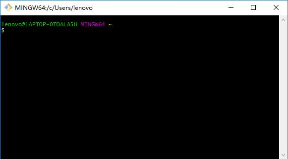
Create a folder into your computer, cd into it
Code into the Git Bash:
You will get:
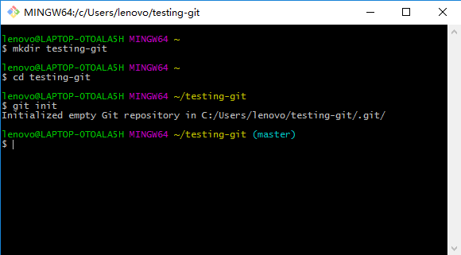
Then create a file with some text into your repository folder(ex:Hello.txt) and code:
You will get:
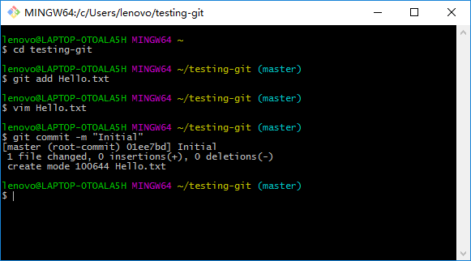
Run the Git Bash, and you will see(almost same):
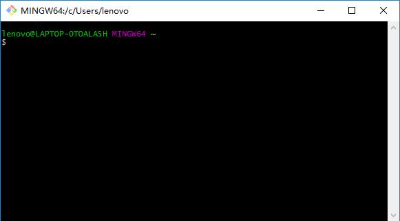
Create a folder into your computer, cd into it
Code into the Git Bash:
You will get:
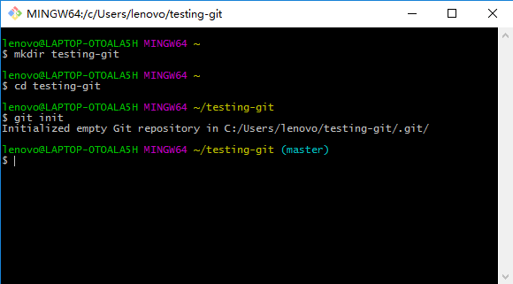
Then create a file with some text into your repository folder(ex:Hello.txt) and code:
You will get:
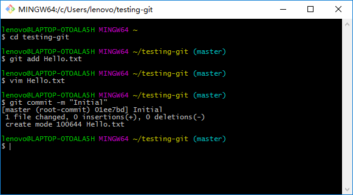
 You can use code:
to edit your file:
i : swift to the write mode
ese : swift to the command mode
:wq : save and return (You need to swift to the command mode first)
You can use the code:
to look if something changed
You can use the code:
to see what actually this file has been changed since last commit
You can use code:
to edit your file:
i : swift to the write mode
ese : swift to the command mode
:wq : save and return (You need to swift to the command mode first)
You can use the code:
to look if something changed
You can use the code:
to see what actually this file has been changed since last commit
Eventually you might need to work on some changes for a long time.
And maybe you’re not sure these changes should make it into the main version of your repository.
Consider you want to add a feature to your software but are not sure of it.
This is the perfect scenario for using a branch. When you create a repository the branch you’re using is called master.
You can create a new branch (ex:branch1) using:
And list what is your current branch using:
And you will get:
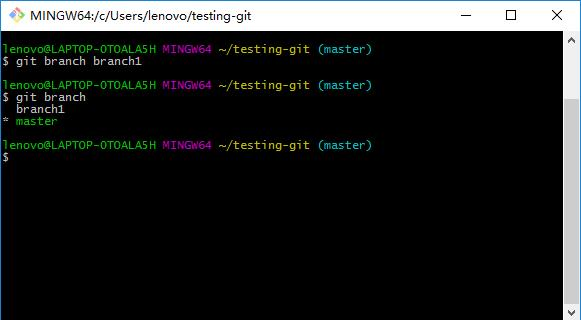
Meaning we are currently using master. To access the branch1:
And you will get:
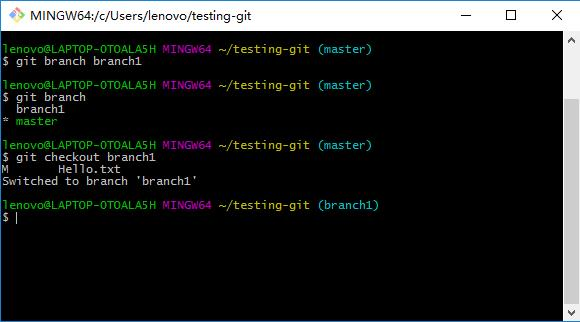
Now we can make edits in the new branch, and commit them without affecting files in master.
Edit the Hello.txt, add and commit some changes to it. Then switch back to the master branch.
You can easily import the changes you made into the “branch1” branch using the merge command.
By using:
Now the master branch will have all the changes you made in the other branch.
Each time you want to sync the two you can merge changes this way.
You can add Remote repositories(ex:https://github.com/fibasile/repo.git) by using:
We can send our project branch to this remote by using:
Once the branch has been pushed, other people or we ourselves can get a copy of the repository for local edits.
This is called cloning. Go into another folder on your computer, and write:
(ex:https://github.com/fibasile/repo.git)
This will create a local copy where you can work, edit files, commit changes and so on.
Once you did that, you can push again your changes.
Now go back to the original folder.
In order to synchronize with the changes you made just now, you now pull the remote repository.
write:
Now both of your local folders are in sync.
This is also a very convenient way of keeping folders synchronized among different computers.
After you install the Sourcetree, you will get:
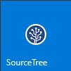
Run it
Click:
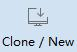
add the URL and Destination Path,then click the Clone:
(ex:https://github.com/fibasile/repo.git)
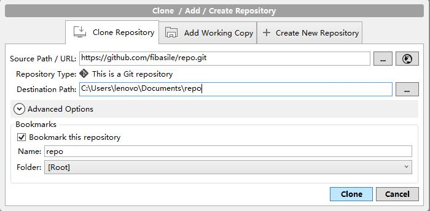
0.1 Go to GitLab
0.2 Click Profile Settings
0.3 Add a SSH Key
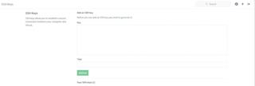
Learn how to generate a key
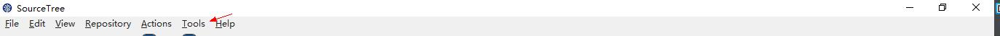
Add your SSH Key
Now the remote repository has been added
You can commit your file:
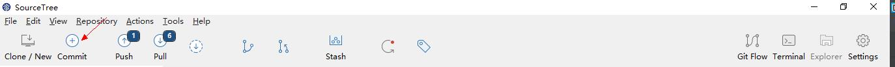
You can push it to the remote repository:
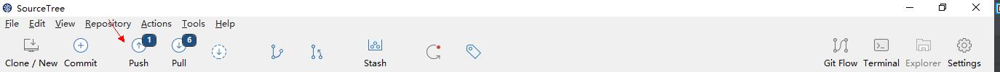
You can pull the file from the remote repository:
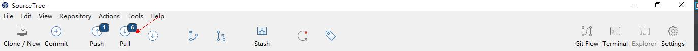
Use the brackets to code html/css files and make a website
01. Download the brackets
02. create a new file and named it with .html
03. start coding:
text something:
embed the iamges:
link a website:
embed a file/video
to make the text Italy:
to make the text strong:
to let the text legend / put the text in the middke
to create a block that encompass the text
set the width and the height:
Here is what I did while coding my website:


Contact me
e-mail: yexh00@icloud.com.